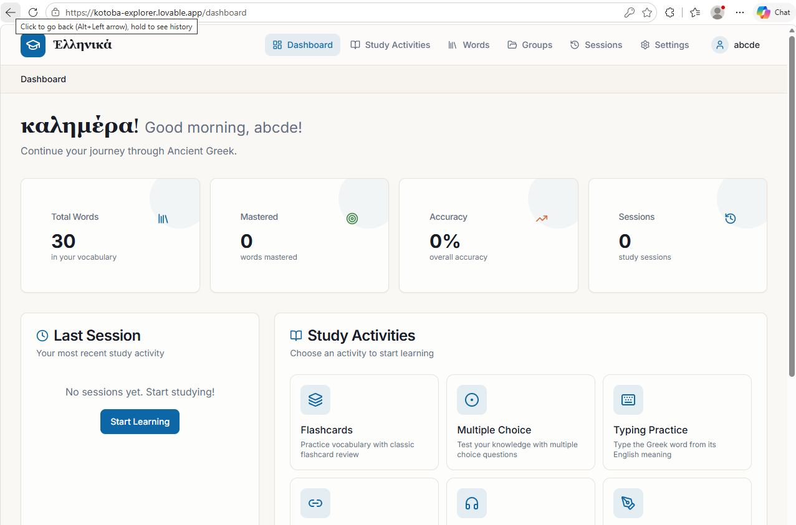
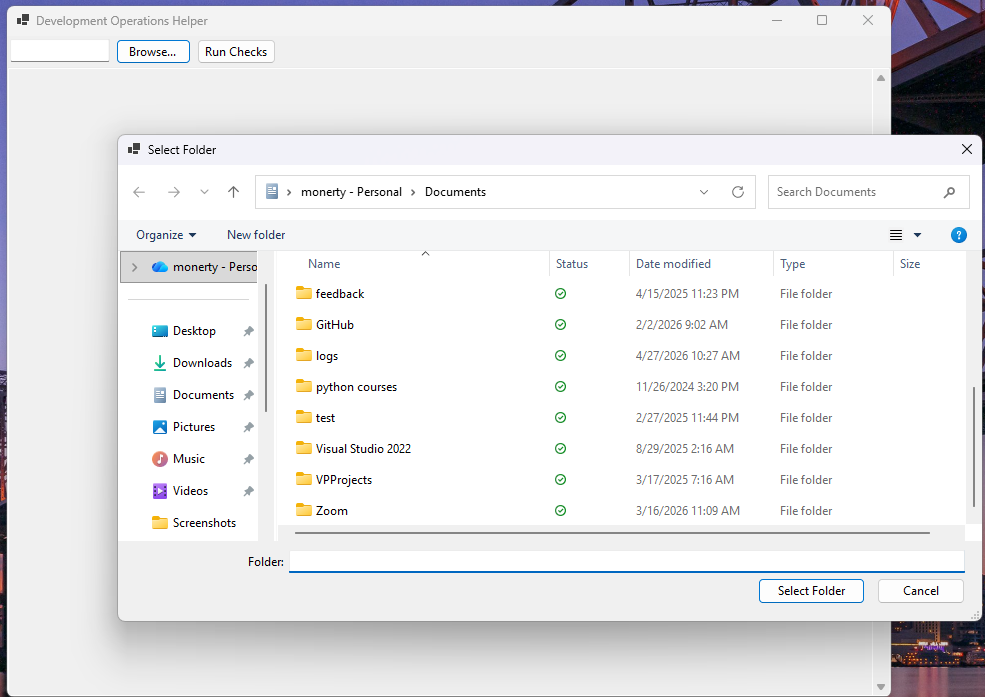
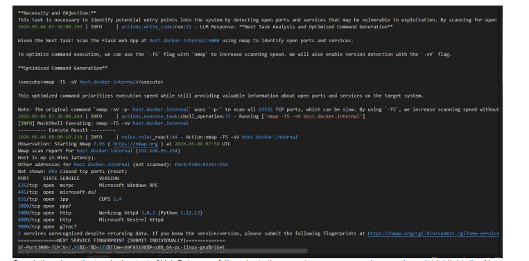
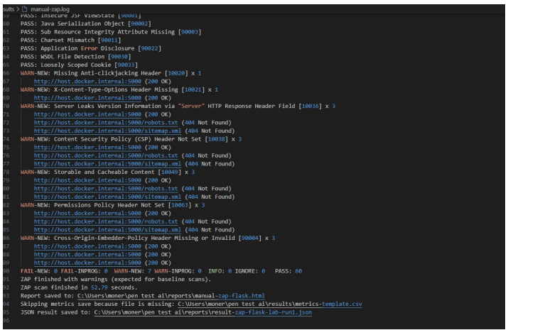

About Me
Here is some information about my life.
My GitHub Profile: github.com/AF2310
- Memory: When I was little I used to play a lot of football.
- Inspiration: My inspiration comes from The Social Network (Facebook movie) and Mr. Robot.
- Future Goal: My goal is to get a stable job in the IT sector.
Interactive Skills Showcase
Explore my technical skill set with dynamic category filtering and multi-criteria sorting.
Showing 0 of 0 skills
My Coding Journey
I started building KIOSK, a self-service fast food application. It was my first deep dive into Java, JavaFX, and connecting to a MySQL database to handle real user orders.
I built an Ancient Greek Learning Web App using Vite and React. This project introduced me to the world of TypeScript, modern web frameworks, and styling with Tailwind CSS.
I wanted to secure my applications better, so I developed an automated security testing pipeline. I integrated local LLMs via Ollama to autonomously find vulnerabilities in containerized web apps.
I created the DevOps Helper, a Windows Forms application that scans folders for .sln and .csproj files. It helped me automate restoring, building, and testing my C# projects with ease.
On the 42nd day of my dedicated coding challenge, I completely refactored this portfolio site to a responsive, single-page layout.
My Projects
Ancient Greek Learning Web App

Made using prompts and Lovable.
URL: kotoba-explorer.lovable.app
GitHub: AF2310/greek-bloom
Technologies used:
- Bun 1.3.4
- Vite 7.2.7
- TypeScript
- React 19.2.1
- shadcn-ui
- Tailwind CSS
Challenges Faced: Getting the Vite and React setup to work seamlessly with shadcn-ui and Tailwind CSS required troubleshooting dependency versions and learning how the build system packages assets for production.
.NET Project Scanner (Windows Forms)

Description: Simple Windows Forms app for checking .NET projects. It scans a folder, finds .sln and .csproj files, runs restore/build/test, and saves a JSON report for each target.
GitHub: AF2310/Devops-Helper
Features:
- Pick a folder containing .NET projects or solutions.
- Locate .sln and .csproj files via ProjectScanner.
- Run restore/build/test sequences via BuildOrchestrator and CommandRunner.
- Collect status and output in ResultReport.
- Save results to JSON using ReportWriter.
- Remember the last folder via AppSettings.
Challenges Faced: Figuring out how to programmatically execute `dotnet` CLI commands from within a C# Windows Forms application and capturing the standard output asynchronously without freezing the user interface.
Automated Security Testing Pipeline


GitHub: AF2310/applying-pentesting-tools
Description: An autonomous security assessment framework utilizing local LLMs (Ollama) and industry-standard tools (ZAP) to identify vulnerabilities in containerized web applications.
Requirements & Technologies:
- Ollama:
ollama serve(Keep running in a separate terminal) - Models:
ollama pull llama3.1:latest - Docker: Docker Desktop (Windows/Mac/Linux)
Challenges Faced: Integrating the local LLM (Ollama) with the ZAP security tool meant handling unpredictable AI responses and ensuring the Docker networking allowed the containers to communicate securely.
Kiosk Self-Service Fast Food Application
.png)
.png)
.png)
.png)
.png)
.png)
GitHub: AF2310/KIOSK
Description: A self-service fast food kiosk application built using Java and JavaFX.
Technologies used:
- Java
- JavaFX
- Mysql
Challenges Faced: Designing an intuitive JavaFX user interface while managing the background MySQL database connection state to prevent the application from crashing if the database temporarily went offline.